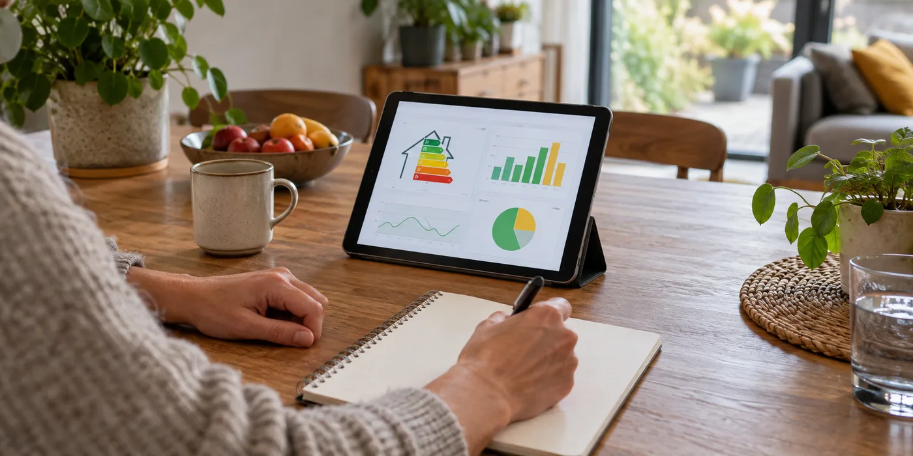

Leg een herkenbare beginsituatie vast
Bewaar de opleverdatum, toestelgegevens en eerste configuratie. Noteer welke dakvlakken in de app zichtbaar zijn en welke totalen je wel of niet kunt bekijken. Vraag welke foutmeldingen aan de installateur gemeld moeten worden. Een logboek helpt om te onderscheiden of je een meetprobleem, appprobleem of productieprobleem bespreekt.
Vergelijk gegevens met dezelfde betekenis
Productie in de omvormerapp is niet hetzelfde als injectie op de digitale meter. Een deel van de productie kan rechtstreeks in de woning gebruikt zijn. Fluvius biedt kwartierwaarden voor afname en injectie. Noteer dus altijd welke grootheid en periode je bekijkt, anders ontstaan schijnbare verschillen die geen defect bewijzen.

Maak meldingen gericht
Beschrijf bij een vraag de datum, periode, weerssituatie en melding in de app. Deel relevante gegevens via het afgesproken kanaal en vermijd onbeveiligde verspreiding van je volledige dossier. Laat de installateur beoordelen of verder onderzoek nodig is. Trek geen jaarconclusie uit enkele zonnige of donkere dagen na plaatsing.
Maak van controle geen dagelijkse wedstrijd
Je doel is begrijpen, niet elke dag een productie-record halen. Spreek met de installateur af welke meldingen belangrijk zijn en welk normaal patroon je mag verwachten. Bewaar een paar representatieve dagen met context in plaats van honderden losse screenshots. Vergelijk installaties van buren niet zonder rekening te houden met dak, configuratie en verbruik. Een rustig logboek met dezelfde meetdefinities maakt een servicevraag betrouwbaarder dan een verzameling uiteenlopende appbeelden.
Een praktisch voorbeeld
De app toont meer productie dan de meter injectie. Dat kan passen bij eigen verbruik. Vraag welke gegevens rechtstreeks gebruik aantonen voordat je een meetfout concludeert.
Illustratief scenario, geen klantcase.
Neem dit mee naar je gesprek
- Opleverdatum en configuratie
- Productie versus meterinjectie
- Dezelfde meetperiode gebruiken
- Foutmelding met datum bewaren
Veelgestelde vraag
Ken ik na één maand mijn jaaropbrengst?
Nee. Een maand is vooral nuttig om monitoring te leren gebruiken; seizoenen maken de jaarvergelijking anders.
Bron en achtergrond
Fluvius: officiële of technische achtergrond bij dit onderwerp ↗
Geraadpleegd op 13 oktober 2026. De praktische checklist en het voorbeeld zijn redactionele uitwerkingen. Fabrikantinformatie geldt voor de beschreven producten; ze is geen algemene garantie voor andere systemen.
Wat betekent dit voor jouw woning?
Gebruik de calculator voor een eerste indicatie. Een vakman beoordeelt jouw situatie en bevestigt de uitvoering en definitieve prijs.
Bekijk de zonnepanelencalculator →